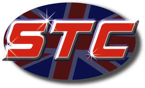

Trade Mark Journal No.2026/007 13 February 2026
UK00004301234 26 November 2025 (37,39)

- Class 37
- Vehicle maintenance; Maintenance (Vehicle -); Vehicle maintenance and repair; Vehicle repair and maintenance; Motor vehicle maintenance; Maintenance of vehicles; Motor vehicle maintenance and repair; Car maintenance; Garage services for vehicle maintenance; Motor vehicle repair and maintenance services; Motor vehicle maintenance and repair services; Vehicle maintenance equipment (Rental of -); Vehicles maintenance and repair; Maintenance and repair of vehicles; Repair and maintenance of vehicles; Maintenance and repair of motor vehicle engines; Maintenance and repair of motor vehicles; Repair and maintenance of motor vehicles; Maintenance of motor vehicles; Maintenance or repair of automotive vehicles; Maintenance, servicing and repair of vehicles; Maintenance and repair of motor vehicle cooling systems; Repair or maintenance of two-wheeled motor vehicles; Garage services for the maintenance and repair of motor vehicles; Automobile repair and maintenance; Maintenance and repair of motor land vehicles; Maintenance and repair of electric vehicles; Repair and maintenance of electric vehicles; Maintenance and repair of motor vehicles for transportation of passengers; Vehicle repair, maintenance, refuelling and recharging; Maintenance and repair of rail vehicles; Vehicle servicing; Services for the maintenance of motor vehicles; Maintenance and repair of land vehicles; Repair and maintenance of land vehicles; Vehicle repair as part of vehicle breakdown services; Maintenance and repair of public transport vehicles; Maintenance and repair of automobiles; Repair and maintenance of automobiles; Repair or maintenance of automobiles; Garage services for motor vehicle repair; Motor vehicle repair; Inspection of vehicles prior to maintenance; Maintenance and repair of motor vehicles and parts thereof; Maintenance and repair of motor vehicles and their engines; Maintenance and repair of motorcycles; Garage services for vehicle repair; Vehicle repair services; Services for the maintenance of windscreens in vehicles; Motor vehicle trim repair; Arranging for the maintenance of motor land vehicles; Providing information relating to the repair or maintenance of two-wheeled motor vehicles; Repair or maintenance of mechanical parking systems; Tyre maintenance and repair; Vehicle repair consultancy; Services for the maintenance of windows in vehicles; Servicing of vehicle engines; Maintenance and repair of motors; Advisory services relating to vehicle maintenance; Vehicle breakdown repair services; Land vehicle repair; Maintenance and repair of engines; Emergency vehicle repair services; Arranging of vehicle repairs; Maintenance and repair of chassis parts and bodies for vehicles; Maintenance and repair of electronic equipment; Maintenance and repair of transport containers; Repair of motor vehicles; Motor vehicle lubrication; Vehicle breakdown assistance [repair]; Vehicle upholstery and repair services; Vehicle windscreen replacement services; Services for the repair of motor vehicles; Maintenance, servicing, tuning and repair of motors; Maintenance of parts and fittings for commercial motor land vehicles; Inspection of automobiles and their parts prior to maintenance and repair; Installation, repair and maintenance of heating equipment; Maintenance and repair of upholstery; Reconditioning of vehicle engines.
- Class 39
- Vehicle towing services; Towing and transport of cars as part of vehicle breakdown services; Vehicle breakdown towing services; Motor vehicle recovery services.
Stockport Truck Centre Limited